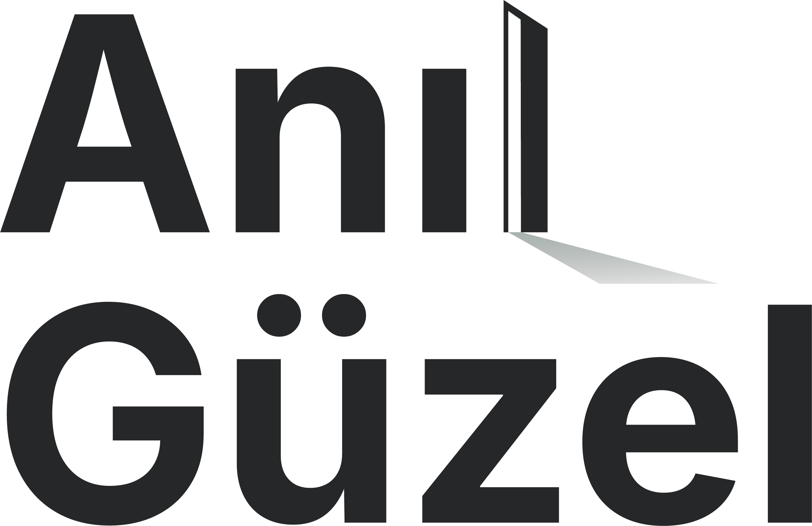

<nav class="navbar">
    <div class="nav-container">
        <a href="index.html" class="logo">
            
        </a>
        <ul class="nav-links" id="navLinks">
            <li class="close-btn" onclick="hideMenu()">✕</li> 
            <li><a href="../en/index.html" title="Home">HOME</a></li>
            <li><a href="../en/about.html" title="About">ABOUT</a></li>
            <li><a href="../en/services.html" title="Antalya Advocate Services">SERVICES</a></li>
            <li><a href="../en/contact.html" title="Contact">CONTACT</a></li>
            <li><a class="lang-selector" href="../index.html" hreflang="tr" lang="tr" aria-label="Turkish">TR</a></li>
        </ul>

        <div class="menu-icon" onclick="showMenu()">
            ☰
        </div>
    </div>
</nav>

<!-- Mobil Menü Kontrol Scripti -->
<script>
    function showMenu() {
        const navLinks = document.getElementById("navLinks");
        navLinks.style.right = "0"; // Ekranın içine getirir
    }

    function hideMenu() {
        const navLinks = document.getElementById("navLinks");
        navLinks.style.right = "-100%"; // Ekranın dışına geri iter
    }
</script>